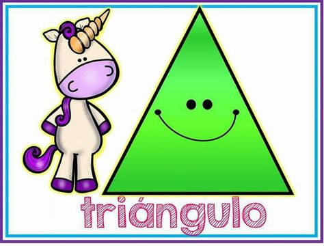
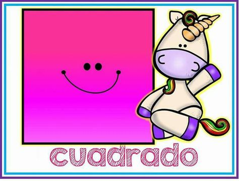
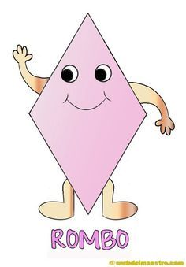
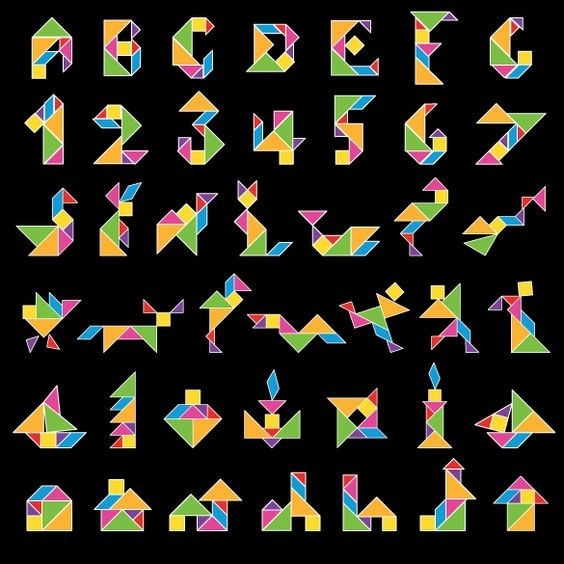

Tangram
¿Qué figuras componen al Tangram?
5. Triángulos:
- Dos triángulos grandes construidos con la diagonal principal del Tangram, son del mismo tamaño.
- Dos triángulos pequeños ubicados en la franja central del Tangram, también son del mismo tamaño.
- Un triángulo de tamaño medio ubicado en la esquina del Tangram.
1. Cuadrado:
- Un Cuadrado esta ubicado en la franja central del Tangram.
1. Rombo o paralelogramo:
- Un romboide ubicado en la franja central del Tangram.
Triángulo

Cuadrado

Rombo

Historia del Tangram
El tangram es un rompecabezas de origen chino que probablemente apareció hace tan sólo 200 ó 300 años. Los chinos lo llamaron "tabla de sabiduría" y "tabla de sagacidad" haciendo referencia a las cualidades que el juego requiere.
La misma palabra "tangram" es un invento occidental: Se supone que fue creada por un norteamericano aficionado a los rompecabezas, quien habría combinado tang, una palabra cantonesa que significa "chino", con el sufijo inglés gram (-grama) que significa "escrito" o "gráfico" (como en cardiograma).
Los primeros libros sobre el tangram aparecieron en Europa a principios del siglo XIX y presentaban tanto figuras como soluciones. Se trataba de unos cuantos cientos de imágenes en su mayor parte figurativas como animales, casas y flores... junto a una escasa representación de formas abstractas.
A lo largo del siglo XIX aparecieron diversos libros de tangram chinos, que fueron copiados por las editoriales europeas, buena prueba de la popularidad que había adquirido el juego. A partir de 1818 se publicaron libros de tangram en EE. UU., Inglaterra, Francia, Alemania, Austria e Italia.
¿En qué consiste y cómo se usa el Tangram?
Con el Tangram se forman figuras a partir de los 7 elementos de base, utilizando TODOS y sin superponerlos
° animales, casas, números, letras, objetos abstractos, figuras geométricas, etc. 
El Gato
Primero formaremos la cabeza del gato con los dos triángulos más pequeños como orejas y su cabeza sera el cuadrado en una posición parecida al rombo.
Seguiremos con el cuerpo: ocuparemos el triángulo mediano que saldrá de la cabeza y asemejará los brazos, después como espejo pondremos el primer triángulo mayor que será la espalda del gato.
Continuaremos con el otro triángulo mayor que se usara para formar las piernas, debe unirse con el otro triángulo mayor destacando una esquina, que serán sus patas.
Al final colocaremos el rombo para formar su cola.
Variante del Gato
Primero formaremos la cabeza del gato con los dos triángulos más pequeños como orejas y su cabeza sera el cuadrado en una posición parecida al rombo.
Seguiremos con el cuerpo:
Continuaremos con el otro triángulo mayor que se usara para formar las piernas, debe unirse solo con la puntas y la posicion de la unión será como se muestra en la imagen, los dos triangulos grandes formarán los pies y la espalda.
El triángulo mediano sera el estomago del gato quedara justo con el espacio que queda libre de los triángulos mayores.
Al final colocaremos el rombo para formar su cola.
Realiza la figura que tu desees
Animales
solo da click en la imagen para jugar y ver los pasos a seguir